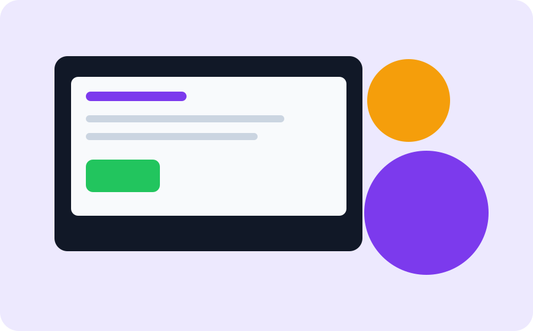

Создание игр
Основы алгоритмов, событий и логики через небольшие 2D-игры и интерактивные истории.
CodeSpark помогает детям освоить программирование, веб-разработку, создание игр и цифровой дизайн через практику и реальные мини-проекты.

Каждая программа построена вокруг практики. Уже на первом занятии ребёнок получает видимый результат.
Основы алгоритмов, событий и логики через небольшие 2D-игры и интерактивные истории.
Переменные, условия, циклы, функции и первые программы на Python.
HTML, CSS, основы JavaScript, макеты, адаптивность и публикация сайтов.
Преподаватель показывает новую идею на понятном примере.
Ученик выполняет короткое задание и сразу видит результат.
В конце модуля собирается мини-проект: игра, сайт или сервис.